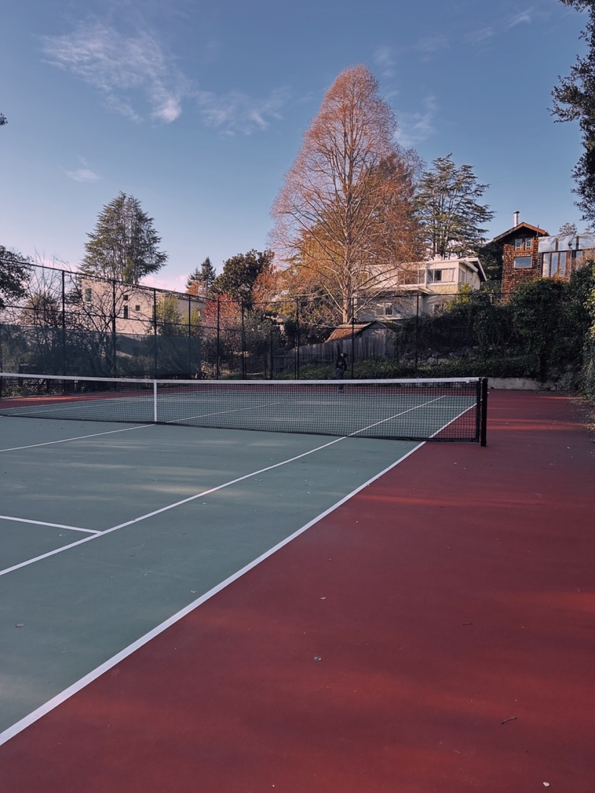
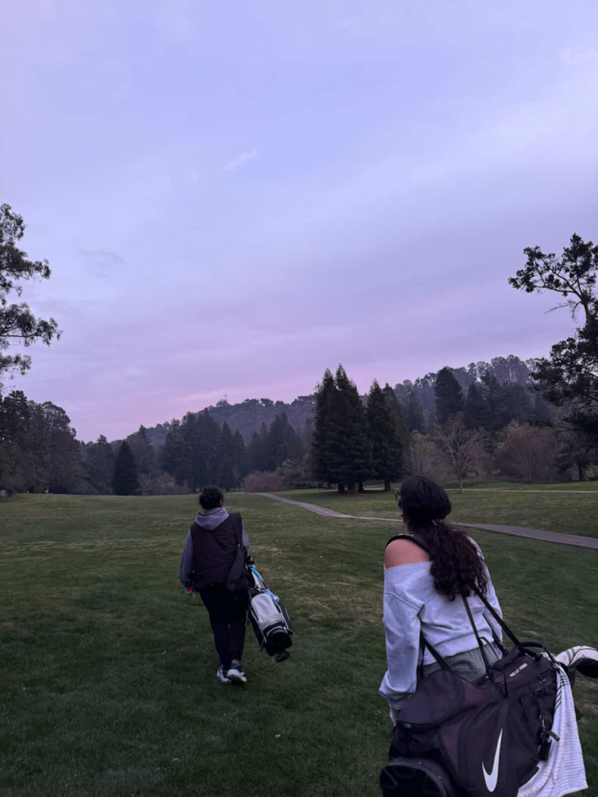
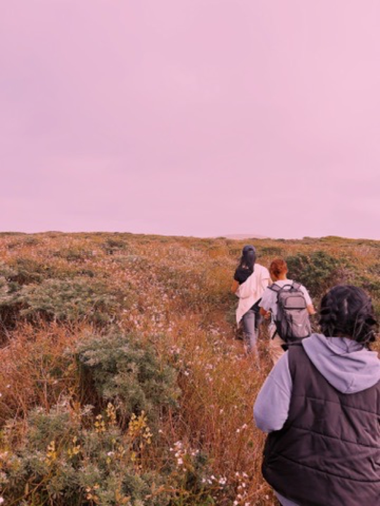
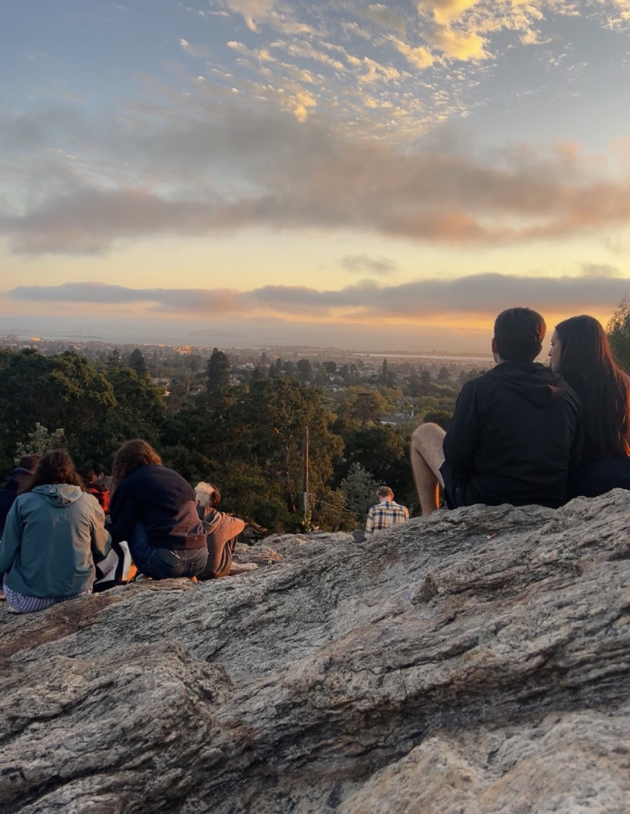
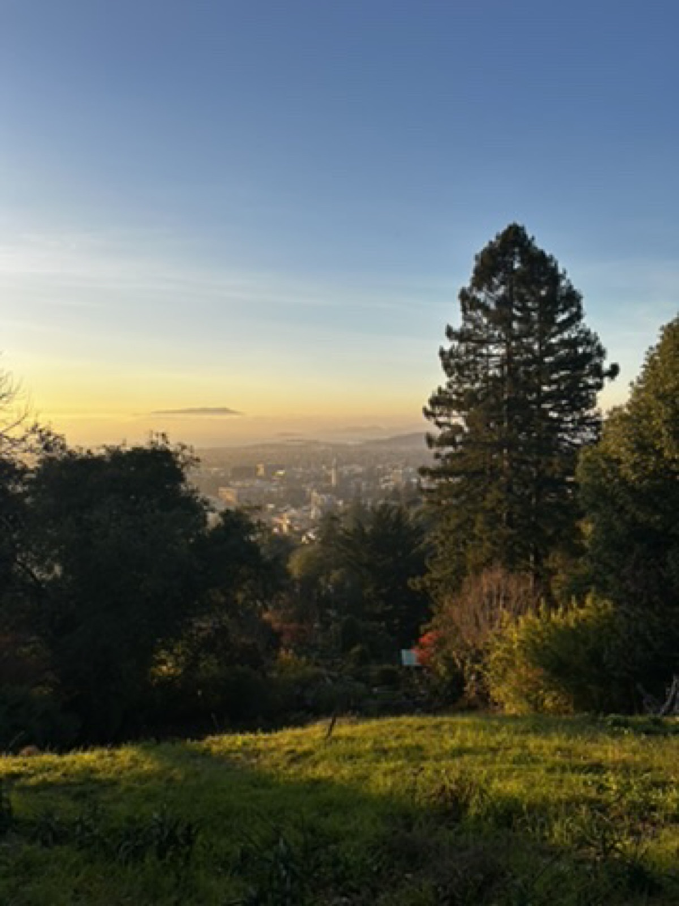
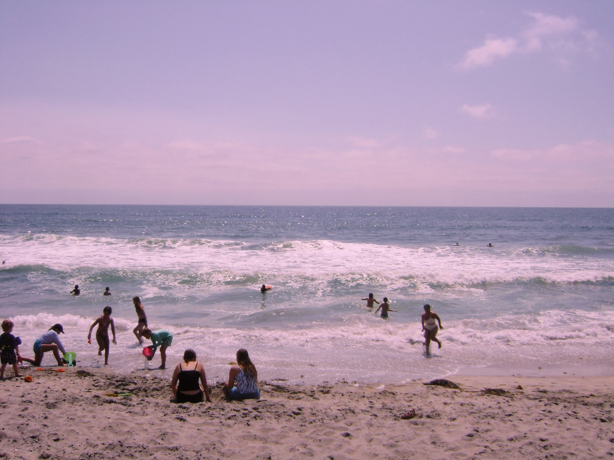
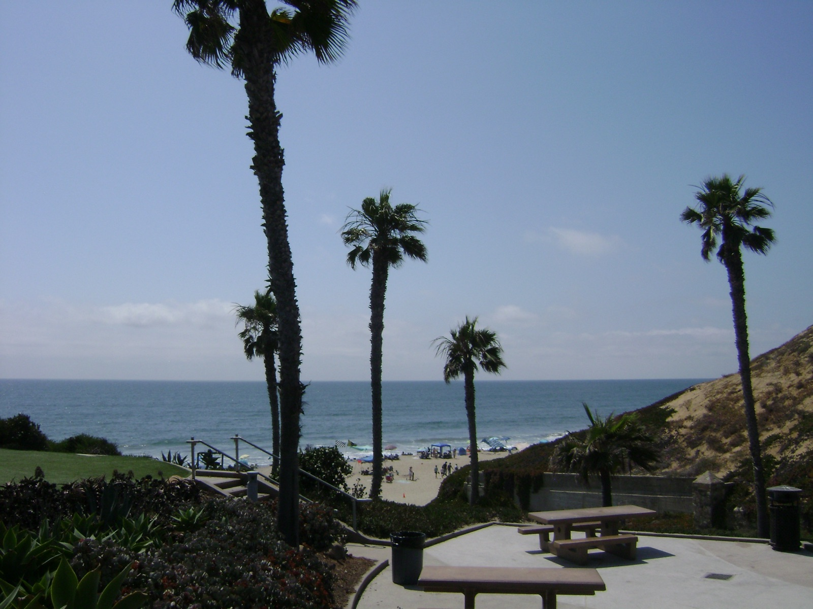
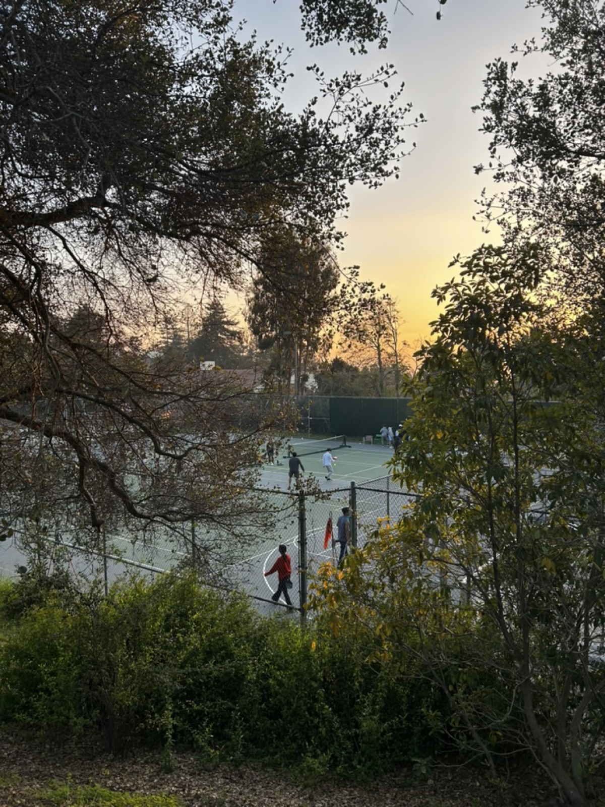
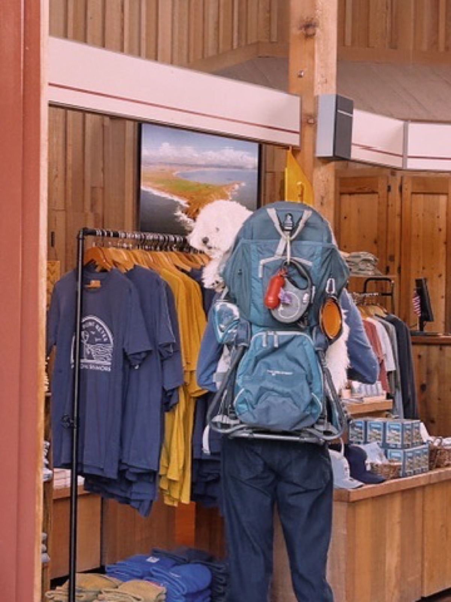

Margins
Life in the margins: the things that make me me, outside the work.
Hobbies & interests
- Long-distance running
- Golf
- Cooking
- Drawing
- Tennis
- Music
- Journaling
- Scrapbooking & digital design
- Industrial design
- Community service
In the kitchen
Food is how I take care of people. I care about who gets access to good food, how our food systems work, and teaching nutrition early, so cooking feels like something you get to do, not something you have to.

Community service
Teaching kids science and nutrition, hands-on.
Sports
Running, tennis, golf, and any excuse to be on a trail.






Photography
Places I stopped to look at.






Scroll sideways →
The arts
Drawing, painting, singing, and dancing: where it all started.